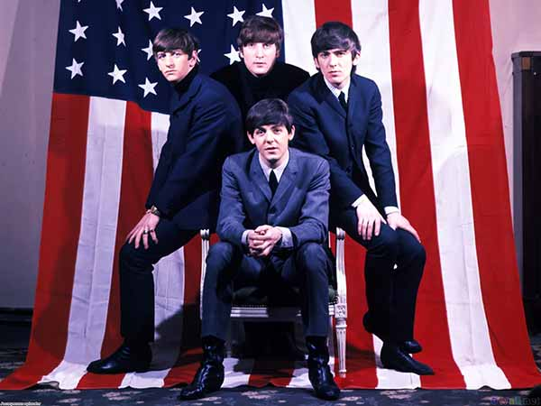
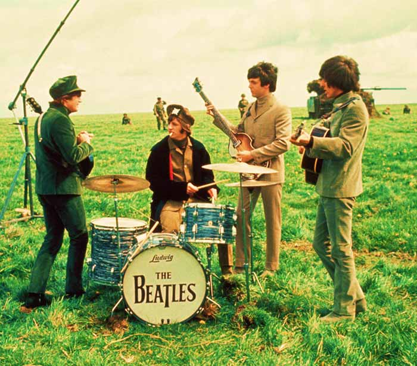

THE BEATLES
Musique Pop

La musique pop est un genre musical apparu dans les années 1960 aux États-Unis. Ses chansons parlent en général de l'amour ou des relations entre les femmes et les hommes. Elle met l'accent sur la chanson individuelle plutôt que sur l'album, et utilise essentiellement des chansons courtes avec des rythmes associés à la danse1. La musique pop fut beaucoup influencée par les technologies, comme l'enregistrement à pistes multiples (vers la fin des années 1960) et le synthétiseur (durant les années 1970 et 1980).
Le terme « chanson de pop » (pop song en anglais) est apparu pour la première fois en anglais en 1926 pour indiquer qu'une pièce de musique avait un certain aspect attirant2. Selon le Grove Music'Online, le terme « musique pop » (« pop music ») a été développé en Angleterre vers 1955 pour décrire le rock and roll et les nouveaux styles musicaux des jeunes qui ont été influencés par celui-ci3.

Par la suite, le terme « pop » (parfois « pop rock ») désigne un sous-genre apparu dans les années 1950-1960. Le rock'n'roll évolue alors pour se subdiviser en deux branches principales, le rock plus fidèle aux racines blues dont il est issu et la pop qui met plus l'accent sur les mélodies et les harmonies vocales. On peut de ce point de vue considérer que la pop connaît sa maturité avec l'avènement des Beatles. Les représentants les plus emblématiques de la branche rhythm and blues étaient les Rolling Stones (qui sur le tard reprirent cependant l'étiquette rock 'n roll).
Le public noir américain ne se sent pas concerné par l'agitation pop. Il réclame sa propre musique, la soul. En chantant I'm Black and I'm Proud, James Brown l'est devenu. Ses disques sont diffusés pendant les manifestations politiques. Pour tous les Noirs, Brown est le soul brother numéro un.